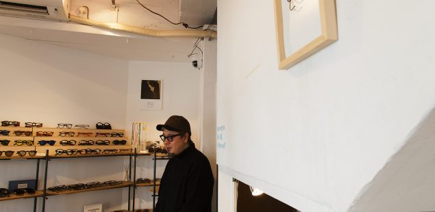
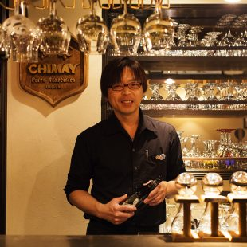
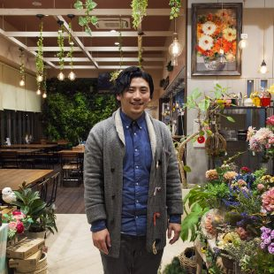
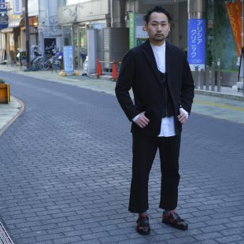
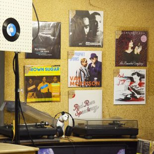
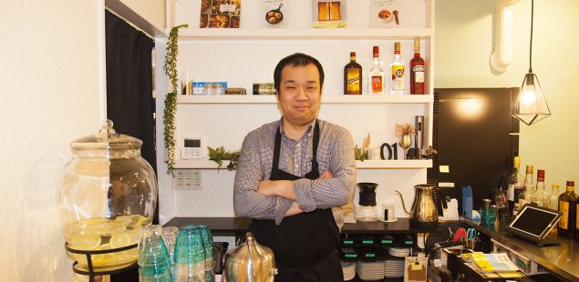
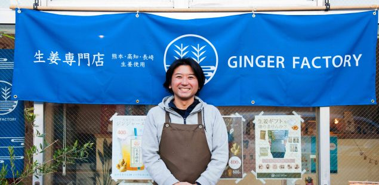

大丸東京店にてアート展「（NIGHT）DEPARTーあらゆる場所に花束をー」が開催
ヨーロッパの国々から集めた古雑貨、ハンドクラフトのお店「rytas」

“本を気持ちよく読めるほど”健康に。「さいたまのハリとお灸 豊泉堂」

歴史とトレンド、両軸からメガネの全てが把握できる「ポンメガネ大宮」

めくるめくベルギービールの世界「ベルジャンビアバー・バービーズ」へようこそ

ガーデニングの夢膨らむカフェ「Gardener’s KITATODA」

大宮で異色を放ち続ける古着店「TOROI」

温故知新を形にした充実のレコードショップ「レコード屋グリグリ」

戸田に注目のニューオープン。本格派シェフが厨房に立つ「CAFE BAR 01」
新鮮な絶品川魚料理が堪能できる新名店「マスカクラブ」。
